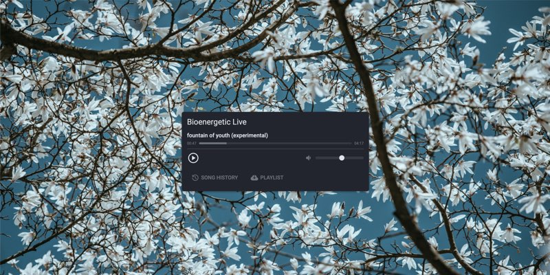

Isaac
Melbourne🇦🇺
Projects
02
bioenergetic.live24/7 live loop of all the interviews and conversation with Ray Peat.

Articles
Long-form and slower; some are still in progress.
Posts
Shorter notes and thoughts. Browse all writing by tag →